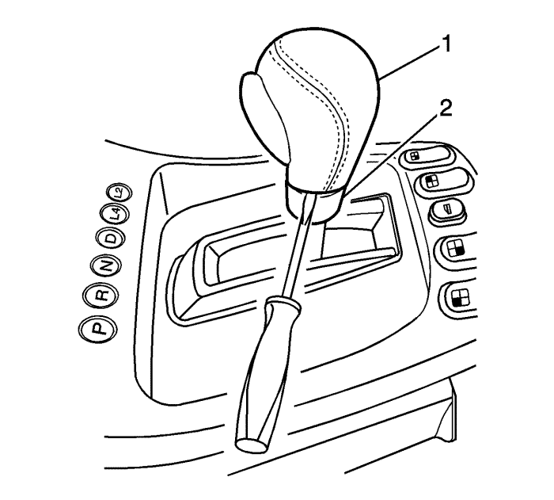
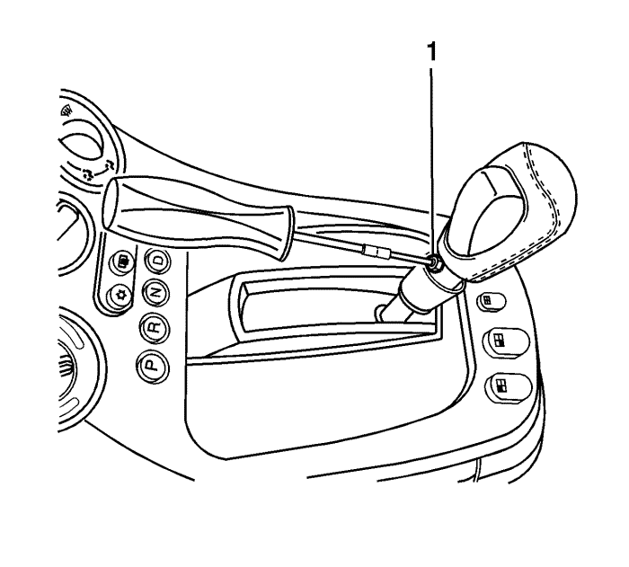
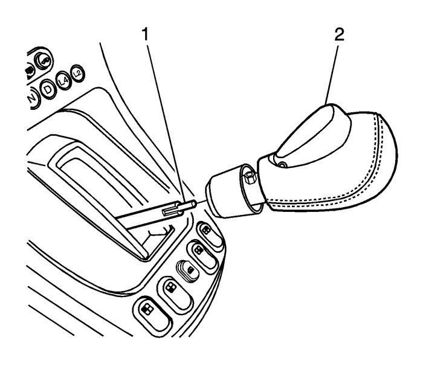
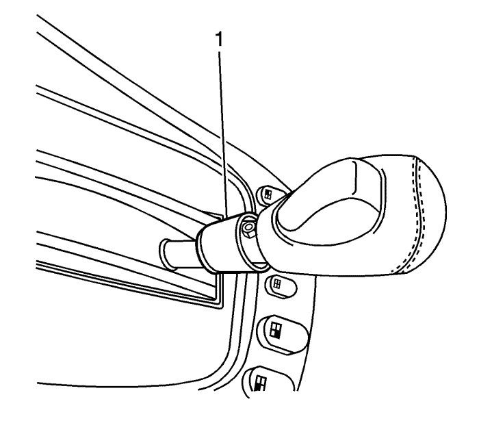

Gire la llave a la posición de RUN, pero no arranque el vehículo.
Mueva la palanca de cambios hacia atrás, a una posición de marcha corta.

Sólo para el pomo de cuero de la palanca de cambios, inserte cuidadosamente una herramienta pequeña de hoja blanda entre el anillo de ajuste (2) y el pomo (1) Aplique cuidadosamente una presión hacia abajo al anillo de ajuste del pomo de la palanca del cambio para separarlo del pomo. El anillo de juste descenderá aproximadamente 13,0 mm (0,5 in.) y dejará a la vista el tornillo de retención del pomo de la palanca de cambio.

Afloje el tornillo del pomo de control del cambio de marchas (1) aproximadamente 4 o 5 vueltas. No es necesario retirar completamente el tornillo del pomo de control del cambio de marchas.

Desmonte el pomo de control del cambio de marchas (2) de la palanca de cambio (1).
Monte el tornillo del pomo de control (1) si se había desmontado anteriormente y apriételo hasta 1,5 N·m (13 lb in)

Sólo para pomos de la palanca del cambio de cuero, levante el anillo de ajuste (1) hacia el pomo hasta que escuche un clip, que indicará que se ha ajustado al pomo.
Compruebe que el botón del pomo de la palanca del cambio funciona correctamente en todas las marchas.
Coloque la palanca del cambio en la posición de estacionamiento.